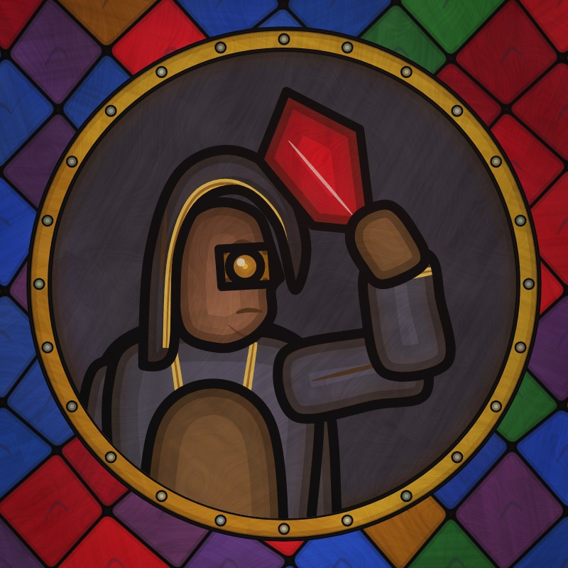

Privacy Policy
Last updated: 6 November 2026
Who uses the app
The Glazier of Terra app is used only by the owner of the Glazier of Terra YouTube channel, to manage that channel. It is not offered to the public.
What data the app accesses
With the owner's permission, through Google's sign-in, the app uses the YouTube API Services to:
- upload videos, captions and details (titles, descriptions, tags, publish times) to the owner's channel;
- read the owner's channel and video information;
- read the owner's channel analytics (such as views and watch time).
How the data is used and stored
This data is used only to publish the channel's videos and to decide which kinds of videos to make next. It is stored on the owner's own server, is not sold, and is not shared with anyone else. Sign-in tokens are kept on that server and can be revoked at any time.
Data retention and deletion
Analytics data read from YouTube is kept on the owner's server for at most 12 months and then deleted. Stored sign-in tokens are deleted when the app's access is revoked. The owner can delete all stored data at any time; the data is also deleted within 30 days if the app is no longer used. To request deletion, use the contact below.
YouTube API Services
This app uses YouTube API Services. By using it you are also bound by the YouTube Terms of Service and the Google Privacy Policy. You can revoke the app's access at any time in your Google Account's security settings.
Contact
Questions about this policy can be sent through the contact details on the Glazier of Terra YouTube channel's About page.